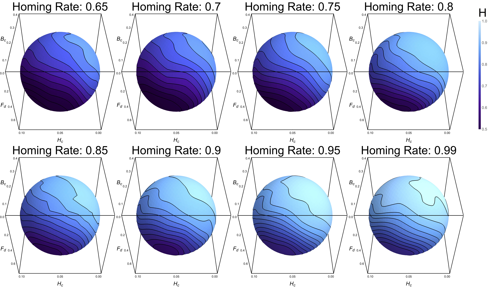

class: center, middle # dataViz Demo ??? Notes for the _first_ slide! --- # Agenda 1. Introduction 2. Deep-dive 3. ... [NOTE]: Note that you need active internet connection to access remark.js script file --- # Introduction $$x = {-b \pm \sqrt{b^2-4ac} \over 2a}.$$ --- # Deep-dive <iframe width="100%" height="500" src="./images/globeFlights.html"></iframe> --- # Third Slide 